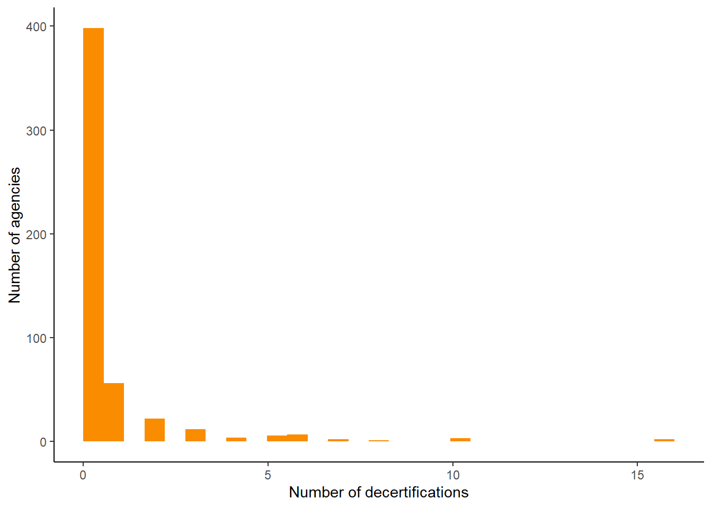

A 2020 state law aimed at addressing integrity issues has led to years of increased decertifications of law enforcement across Virginia, according to data obtained by the Virginia Center for Investigative Journalism and MuckRock.
Visualized by the chart below
When the law took effect in March 2021, decertifications more than doubled from the previous year. Since 2021, there have been about 75 officers decertified each year. Before the law changed, the highest number of officers decertified in any year was 17.
“… more than doubled from the previous year.” —> \(17*2 = 34\) compared to 50 in 2021
“… about 75 officers decertified each year.” —> \((50+81+94+81)/4 = 76.5\)
Visualization in the article
What agencies decertify the most officers?
Most agencies haven’t decertified an officer since law change
Sentences in the article
While the 2020 law has led to an increase in decertifications across the state, the way agencies have implemented the law varies. Most agencies haven’t decertified a single officer since the law changed, and of those that have, many have decertified just one officer.
Trend visualized in chart below (this chart will not be included in article)
“Most agencies…” —> in data table below \(398/512 = 0.77\) or about 77%
“… many have decertified just one officer” in data table below —> 56
Histogram of agencies and decertifications

Data table of number of agencies to number decertifications
Some agencies have decertified a handful of officers or more
Setences in the article
Five agencies have decertified more than ten officers: Virginia State Police, Chesapeake Police Department, Henrico County Sheriff’s Office, Fairfax County Police Department and Fairfax County Sheriff’s Office.
See data table below: Virginia State Police (16), Chesapeake (16), Henrico County SO (10), Fairfax County PD (10), Fairfax County SO (10)
The Virginia State Police employs more officers than any other agency and has decertified more officers than any other agency.
See data table below: Virginia State Police certified officers or jailors = 1,788
But the Chesapeake Police Department is a fifth the size of the State Police and has decertified as many officers as the State Police since the law changed.
See data table below: “… a fifth the size …” —> \(331/1788 = 0.185\) or about 20%, a fifth
Meanwhile, two of the state’s largest agencies, Loudoun County Sheriff’s Office and Virginia Beach Police Department, have just two decertifications each. Neither agency responded to emailed questions about decertifications at their agencies.
See data table below: “… just two decertifications each…”
Data table of number of decertifications and number of certified officers in each agency
The Henrico County Sheriff’s Department, which employs about 80 fewer officers than the Chesapeake Police Department, has decertified 10 officers since the new law went into effect. Before 2021, the Henrico County Sheriff’s Office had not decertified a single officer.
See data table above: “… about 80 fewer officers …” —> \(331 - 248 = 83\)
See data table below: “Before 2021 … not decertified a single officer.”
Data table of agencies that decertfied an officer before law changed in 2021
Visualization in the article
What types of misconduct are most common?
The big change since 2021 is lying and falsifying information
Setences in the article
Since the recent changes, the leading reasons for decertifications have been lying or falsifying information. For example, 14 of the 16 officers decertified from the Chesapeake Police were decertified for lying. All 10 officers in the Henrico Sheriff’s Office were decertified for lying.
“…leading reasons for decertifications…” see data table below
“… 14 of the 16 officers decertified from the Chesapeake Police were …” and “All 10 officers in the Henrico Sheriff’s Office…” see data table below
Data table of number of decertifications by decertification reason
Data table of officer level decertifications for Chesapeake PD and Henrico SO
What about reinstatements?
Reinstatements are also increasing
Setences in the article
Reinstatements following appeals have gradually increased since the new law took effect, reaching a high in 2024.
“… gradually increased …” see data table below
Data table of reinstatement totals by year
Source Code
---title: "Findings and data bulletproofing"author: "Dillon Bergin"date: "5/7/2025"execute: output: false echo: falseformat: html: code-tools: true theme: cosmo toc: true---```{r}library(tidyverse)library(here)library(janitor)library(ggplot2)library(plotly)library(DT)library(lubridate)``````{r}present <-read.csv(here("data", "processed","analysis", "present.csv")) %>%select(-X, -...1)prior <-read.csv(here("data", "processed","analysis", "prior.csv")) %>%select(-X, -...1)reinstated <-read.csv(here("data", "processed","analysis", "reinstated.csv")) %>%select(-X, -...1)certified_directory <-read.csv(here("data", "processed","analysis", "certified_directory.csv")) %>%select(-X)```# How have decertifications changed over time?## Decertifications increased after law change### Sentences in the article > A 2020 state law aimed at addressing integrity issues has led to years of increased decertifications of law enforcement across Virginia, according to data obtained by the Virginia Center for Investigative Journalism and MuckRock.- Visualized by the chart below> When the law took effect in March 2021, decertifications more than doubled from the previous year. Since 2021, there have been about 75 officers decertified each year. Before the law changed, the highest number of officers decertified in any year was 17. - "... more than doubled from the previous year." ---> $17*2 = 34$ compared to 50 in 2021- "... about 75 officers decertified each year." ---> $(50+81+94+81)/4 = 76.5$```{r}# Dataframe that sums the total of number of decertifications for each year since law changeby_year_present <- present %>%mutate(year =year(fixed_date)) %>%group_by(year) %>%summarize(num =n()) %>%# Remove two cases, one from 2025 since we don't have enough data and one from 2029 that is data errorfilter(!year %in%c("2025", "2029"))# Calculate the average num of decertifications yearly since law change: 76.5mean_present <-mean(by_year_present$num)# Dataframe that sums the total of number of decertifications for each year before law changeby_year_prior <- prior %>%mutate(year =year(fixed_date)) %>%group_by(year) %>%summarize(num =n()) # Dataframe of all years of certifications for comparisonmerge_years <-rbind(by_year_present, by_year_prior) %>%# Fill in zero for years not included in data: 2001, 2002, 2003, 2004, 2006, 2007, 2008, 2009, 2011complete(year =seq(min(year), max(year), by =1),fill =list(num =0)) %>%arrange(desc(year)) # Export data to csv for Datawrapper chartwrite.csv(merge_years, "../data/processed/vis/all_years.csv")```### Visualization in the article<iframetitle="2020 law created a big shift in Virginia's police decertifications"aria-label="Bar Chart"id="datawrapper-chart-xH2TV"src="https://datawrapper.dwcdn.net/xH2TV/4/"scrolling="no"frameborder="0"style="width: 0; min-width: 100% !important; border: none;"height="765"data-external="1"></iframe><script type="text/javascript">!function(){"use strict";window.addEventListener("message",(function(a){if(void0!==a.data["datawrapper-height"]){var e=document.querySelectorAll("iframe");for(var t in a.data["datawrapper-height"])for(var r,i=0;r=e[i];i++)if(r.contentWindow===a.source){var d=a.data["datawrapper-height"][t]+"px";r.style.height=d}}}))}();</script># What agencies decertify the most officers? ## Most agencies haven't decertified an officer since law change### Sentences in the article > While the 2020 law has led to an increase in decertifications across the state, the way agencies have implemented the law varies. Most agencies haven't decertified a single officer since the law changed, and of those that have, many have decertified just one officer. - Trend visualized in chart below (this chart will not be included in article)- "Most agencies..." ---> in data table below $398/512 = 0.77$ or about 77%- "... many have decertified just one officer" in data table below ---> 56```{r}# Dataframe of total number of decertifications at each agency that has decertified an officer since 2021present_agency_totals <- present %>%group_by(agency_name) %>%summarize(decerts =n())# Dataframe of total number of decertifications at each agency that has decertified an officer before 2021prior_agency_totals <- prior %>%group_by(agency_name) %>%summarize(num =n())# Dataframe of agencies that haven't decertified an officer since 2021# Joins dataset of all law enforcement agencies with dataset of present decertifications no_decertifications <- certified_directory %>%anti_join(present, join_by(place_of_employment == agency_name)) %>%select(agency_name = place_of_employment) %>%mutate(decerts =0)# Dataframe of all agencies that have and haven't had a decertification since 2021all_agencies <-rbind(no_decertifications, present_agency_totals)```## Histogram of agencies and decertifications ```{r}#| output: trueggplot(all_agencies, aes(x=decerts)) +geom_histogram(fill ="#fa8c00", boundary =0) +labs(x ="Number of decertifications",y ="Number of agencies") +theme_classic()``````{r}# Dataframe of number of decertifications grouped by how many agencies decertified that many officersdecert_bins <- all_agencies %>%group_by(decerts) %>%rename(num_decerts = decerts) %>%summarize(num_agencies =n())# Checking which agencies aren't in directory but are in decertifications # We have 513 agencies total instead of 512 because one decertification seems to combine two agencies additional_agencies <- all_agencies %>%select(agency_name) %>%anti_join(certified_directory, join_by(agency_name == place_of_employment))```## Data table of number of agencies to number decertifications ```{r}#| output: truedatatable(decert_bins, filter ='top', class ='cell-border stripe order-column', extensions ='Buttons',rownames =FALSE, options =list(paging =TRUE,searching =TRUE,fixedColumns =TRUE,autoWidth =TRUE,ordering =TRUE,dom ='tB',buttons =c('copy', 'csv', 'excel') ))```## Some agencies have decertified a handful of officers or more### Setences in the article > Five agencies have decertified more than ten officers: Virginia State Police, Chesapeake Police Department, Henrico County Sheriff's Office, Fairfax County Police Department and Fairfax County Sheriff's Office. - See data table below: Virginia State Police (16), Chesapeake (16), Henrico County SO (10), Fairfax County PD (10), Fairfax County SO (10)> The Virginia State Police employs more officers than any other agency and has decertified more officers than any other agency. - - See data table below: Virginia State Police certified officers or jailors = 1,788> But the Chesapeake Police Department is a fifth the size of the State Police and has decertified as many officers as the State Police since the law changed.- See data table below: "... a fifth the size ... " ---> $331/1788 = 0.185$ or about 20%, a fifth> Meanwhile, two of the state's largest agencies, Loudoun County Sheriff's Office and Virginia Beach Police Department, have just two decertifications each. Neither agency responded to emailed questions about decertifications at their agencies. - See data table below: "... just two decertifications each..."```{r}# Dataframe that combines number of decertifications with number of certified officers and compares rank and percentile rank, for agencies that have decertified an officerpresent_agency_totals_cert <- present_agency_totals %>%left_join(certified_directory, join_by(agency_name == place_of_employment)) %>%select(agency_name, num_decerts = decerts, certified_officers_jailors) %>%mutate(percentile_decert =round(rank(num_decerts, ties.method ="min") /nrow(present_agency_totals) *100, digits =2)) %>%mutate(size_rank =rank(-certified_officers_jailors, ties.method ="min")) %>%mutate(percentile_size =round(rank(certified_officers_jailors, ties.method ="min") /nrow(present_agency_totals) *100, digits =2)) %>%mutate(decert_rank =rank(-num_decerts, ties.method ="min"))# Dataframe that combines decertifications with certified officers and compares rank, for all 513 agences, not just those that have decertified all_agencies_totals <- all_agencies %>%left_join(certified_directory, join_by(agency_name == place_of_employment)) %>%select(agency_name, num_decerts = decerts, certified_officers_jailors) %>%mutate(size_rank =rank(-certified_officers_jailors, ties.method ="min")) %>%mutate(decert_rank =rank(-num_decerts, ties.method ="min"))# Dataframe of top ten agencies have decertified and officer for Datawrapper chartfive_or_over <- present_agency_totals_cert %>%filter(num_decerts >=5)#top_ten_agencies <- present_agency_totals_cert %>% #slice_max(order_by = num_decerts, n = 10)# Writing data to csv for Datawrapperwrite.csv(five_or_over, "../data/processed/vis/agencies_five_or_over.csv")```## Data table of number of decertifications and number of certified officers in each agency```{r}#| output: truedatatable(all_agencies_totals, filter ='top', class ='cell-border stripe order-column', extensions ='Buttons',rownames =FALSE, options =list(paging =TRUE,searching =TRUE,fixedColumns =TRUE,autoWidth =TRUE,ordering =TRUE,dom ='tB',buttons =c('copy', 'csv', 'excel') ))```> The Henrico County Sheriff's Department, which employs about 80 fewer officers than the Chesapeake Police Department, has decertified 10 officers since the new law went into effect. Before 2021, the Henrico County Sheriff's Office had not decertified a single officer.- See data table above: "... about 80 fewer officers ... " ---> $331 - 248 = 83$ - See data table below: "Before 2021 ... not decertified a single officer."```{r}# Dataframe of decertifications by agency prior to 2021by_agency_prior <- prior %>%group_by(agency_name) %>%summarize(num =n()) ```## Data table of agencies that decertfied an officer before law changed in 2021```{r}#| output: truedatatable(by_agency_prior, filter ='top', class ='cell-border stripe order-column', extensions ='Buttons',rownames =FALSE, options =list(paging =TRUE,searching =TRUE,fixedColumns =TRUE,autoWidth =TRUE,ordering =TRUE,dom ='tB',buttons =c('copy', 'csv', 'excel') ))```### Visualization in the article <iframetitle="Despite small size, some departments have decertified several officers since law changed"aria-label="Scatter Plot"id="datawrapper-chart-1LPo0"src="https://datawrapper.dwcdn.net/1LPo0/6/"scrolling="no"frameborder="0"style="width: 0; min-width: 100% !important; border: none;"height="546"data-external="1"></iframe><script type="text/javascript">!function(){"use strict";window.addEventListener("message",(function(a){if(void0!==a.data["datawrapper-height"]){var e=document.querySelectorAll("iframe");for(var t in a.data["datawrapper-height"])for(var r,i=0;r=e[i];i++)if(r.contentWindow===a.source){var d=a.data["datawrapper-height"][t]+"px";r.style.height=d}}}))}();</script># What types of misconduct are most common?## The big change since 2021 is lying and falsifying information### Setences in the article > Since the recent changes, the leading reasons for decertifications have been lying or falsifying information. For example, 14 of the 16 officers decertified from the Chesapeake Police were decertified for lying. All 10 officers in the Henrico Sheriff's Office were decertified for lying. - "...leading reasons for decertifications..." see data table below - "... 14 of the 16 officers decertified from the Chesapeake Police were ..." and "All 10 officers in the Henrico Sheriff's Office..." see data table below```{r}# Dataframe of grouped reasons for certifications type <- present %>%group_by(reason) %>%summarize(decerts =n()) # Decertifications at Chesapeake and Henrico as example type_henrico_chesapeake <- present %>%filter(agency_name %in%c("Chesapeake Police Department", "Henrico County Sheriff's Office")) ```## Data table of number of decertifications by decertification reason```{r}#| output: truedatatable(type, filter ='top', class ='cell-border stripe order-column', extensions ='Buttons',rownames =FALSE, options =list(paging =TRUE,pageLength =10,lengthMenu =c(5, 10, 25, 50),searching =TRUE,fixedColumns =TRUE,autoWidth =TRUE,ordering =TRUE,dom ='tB',buttons =c('copy', 'csv', 'excel') ))```## Data table of officer level decertifications for Chesapeake PD and Henrico SO ```{r}#| output: truedatatable(type_henrico_chesapeake, filter ='top', class ='cell-border stripe order-column', extensions ='Buttons',rownames =FALSE, options =list(paging =TRUE,pageLength =10,lengthMenu =c(5, 10, 25, 50),searching =TRUE,fixedColumns =TRUE,autoWidth =TRUE,ordering =TRUE,dom ='tB',buttons =c('copy', 'csv', 'excel') ))```# What about reinstatements?## Reinstatements are also increasing### Setences in the article > Reinstatements following appeals have gradually increased since the new law took effect, reaching a high in 2024. - "... gradually increased ..." see data table below```{r}# Dataframe of reinstatements by yearreinstated_year <- reinstated %>%mutate(year =year(recert_date)) %>%group_by(year) %>%summarize(number =n())```## Data table of reinstatement totals by year```{r}#| output: truedatatable(reinstated_year, filter ='top', class ='cell-border stripe order-column', extensions ='Buttons',rownames =FALSE, options =list(paging =TRUE,pageLength =10,lengthMenu =c(5, 10, 25, 50),searching =TRUE,fixedColumns =TRUE,autoWidth =TRUE,ordering =TRUE,dom ='tB',buttons =c('copy', 'csv', 'excel') ))```